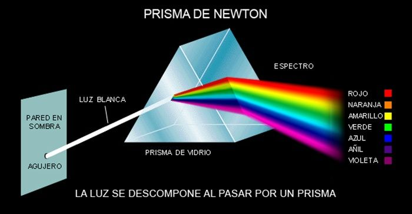

Isaac Newton nació el 25 de diciembre de 1642 (4 de enero de 1643 según el calendario actual) en Woolsthorpe, Lincolnshire, Inglaterra. Fue hijo de Isaac Newton Sr., un agricultor que falleció antes de que él naciera, y Hannah Ayscough. Desde joven mostró gran interés por la lectura y los experimentos.
Estudió en la Universidad de Cambridge, donde se formó en matemáticas y física. Durante el cierre de la universidad por una epidemia de peste (1665–1666), desarrolló muchas de sus ideas más importantes.
Newton fue físico, matemático y astrónomo, y es considerado uno de los científicos más influyentes de la historia. Entre sus principales logros se encuentra la formulación de las tres leyes del movimiento y la ley de la gravitación universal, que explican cómo se mueven los objetos y por qué los planetas orbitan alrededor del Sol. También desarrolló el cálculo diferencial e integral de manera independiente a Leibniz, herramienta fundamental para las matemáticas y la ingeniería.

En el campo de la óptica, demostró que la luz blanca está compuesta por distintos colores al hacerla pasar por un prisma. Publicó sus descubrimientos más importantes en su obra Philosophiæ Naturalis Principia Mathematica (1687), considerada una de las obras científicas más importantes de todos los tiempos.
Newton fue presidente de la Royal Society y fue nombrado caballero por la reina Ana en 1705, por lo que se le conoce como Sir Isaac Newton. Falleció el 31 de marzo de 1727 en Londres, Inglaterra, y fue enterrado en la Abadía de Westminster, honor reservado para figuras muy importantes del Reino Unido. Hoy en día, Newton es reconocido como uno de los pilares de la física clásica y de las matemáticas modernas.